ADBC Driver Manager and Manifests¶
Note
This document describes using the driver manager to load drivers. The driver manager is not required to use ADBC in general but it allows loading drivers written in a different language from the application and improves the experience when using multiple drivers in a single application. For more information on how the driver manager works see How Drivers and the Driver Manager Work Together.
There are two ways to load a driver with the driver manager:
Directly specifying the dynamic library to load.
Referring to a driver manifest file which contains metadata along with the location of the dynamic library to be loaded.
With either method, you specify the dynamic library or driver manifest as the
driver option to the driver manager or you can use an explicit function for
loading drivers if your driver manager library exposes one (e.g., C++, see
example below). With either method, you can also specify the driver in a
connection profile. You can additionally let the
driver manager select the driver from the scheme of the ADBC connection URI
(see Resolving a Driver from a Connection URI).
Note
In addition to the driver option, there is also an
entrypoint option that should be used if the driver uses a
non-default entrypoint.
Directly Loading a Driver¶
The simplest mechanism for loading a driver via the driver manager is to provide a file path to the dynamic library as the driver name.
You can specify the driver to load using the driver option to the
driver manager or you can use AdbcLoadDriver() to directly load
the driver.
struct AdbcDatabase database;
struct AdbcError error;
std::memset(&database, 0, sizeof(database));
std::memset(&error, 0, sizeof(error));
auto status = AdbcDatabaseNew(&database, &error);
// if status != ADBC_STATUS_OK then handle the error
// Load the driver by setting the "driver" option
status = AdbcDatabaseSetOption(&database, "driver", "/path/to/libadbc_driver.so", &error);
// if status != ADBC_STATUS_OK then handle the error
// Alternatively, load directly with AdbcLoadDriver
struct AdbcDriver driver;
struct AdbcError error;
std::memset(&driver, 0, sizeof(driver));
std::memset(&error, 0, sizeof(error));
auto status = AdbcLoadDriver("/path/to/libadbc_driver.so", nullptr,
ADBC_VERSION_1_1_0, &driver, &error);
// if status != ADBC_STATUS_OK then handle the error
You can use it as a driver via GADBCDatabase
GError *error = NULL;
GADBCDatabase *database = gadbc_database_new(&error);
if (!database) {
/* handle error */
}
if (!gadbc_database_set_option(database, "driver", "/path/to/libadbc_driver.so", &error)) {
/* handle error */
}
Loading a driver in Go is similar:
import (
"context"
"github.com/apache/arrow-adbc/go/adbc"
"github.com/apache/arrow-adbc/go/adbc/drivermgr"
)
func main() {
var drv drivermgr.Driver
db, err := drv.NewDatabase(map[string]string{
"driver": "/path/to/libadbc_driver.so",
})
if err != nil {
// handle error
}
defer db.Close()
// ... do stuff
}
You can use the DBAPI interface as follows:
import adbc_driver_manager
with adbc_driver_manager.dbapi.connect(driver="/path/to/libadbc_driver.so") as conn:
# use the connection
pass
You can use the DBAPI interface as follows:
library(adbcdrivermanager)
con <- adbc_driver("/path/to/libadbc_driver.so") |>
adbc_database_init(uri = "...") |>
adbc_connection_init()
You can use the ADBC::Database as follows:
require "adbc"
ADBC::Database.open(driver: "/path/to/libadbc_driver.so") do |database|
# use the database
end
Rust has a ManagedDriver type with static methods for loading drivers:
use adbc_core::options::AdbcVersion;
use adbc_core::driver_manager::ManagedDriver;
fn get_driver() -> ManagedDriver {
ManagedDriver::load_from_name("/path/to/libadbc_driver.so", None, AdbcVersion::V100).unwrap()
}
As an alternative to passing the full path to the dynamic library, you may
prefer to use LD_LIBRARY_PATH (or similar, depending on your operating
system) and specify just the filename (i.e., libadbc_driver.so instead of
/path/to/libadbc_driver.so.
However, the requirement of having the path to the dynamic library or having it
on your LD_LIBRARY_PATH can prove difficult for ensuring security, reproducibility,
and ease of use. For this reason, there is the concept of a driver manifest.
Driver Manifests¶
A driver manifest is a TOML file that contains both metadata about the driver along with the location of the shared library to load. The driver manager can then locate the manifest and use it to load the driver if it was given the shared library path directly. This allows for more portable installations of drivers, and sharing of configurations. Tools can even be created and written to automatically manage driver installations.
Manifest Structure¶
While most of the keys are optional, we define a set of keys and structure which are expected to be present in a driver manifest. This provides for consistent handling of manifests by the driver manager implementations and by tools that may be written to manage driver installations.
Below is an example of a driver manifest:
manifest_version = 1
name = 'Driver Display Name'
version = '1.0.0' # driver version
publisher = 'string to identify the publisher'
license = 'Apache-2.0' # or otherwise
url = 'https://example.com' # URL with more info about the driver
# such as a github link or documentation.
[ADBC]
version = '1.1.0' # Maximum supported ADBC spec version
[ADBC.features]
supported = [] # list of strings such as 'bulk insert'
unsupported = [] # list of strings such as 'async'
[Driver]
entrypoint = 'AdbcDriverInit' # entrypoint to use if not using default
# You can provide just a single path
# shared = '/path/to/libadbc_driver.so'
# or you can provide platform-specific paths for scenarios where the driver
# is distributed with multiple platforms supported by a single package.
[Driver.shared]
# paths to shared libraries to load based on platform tuple
linux_amd64 = '/path/to/libadbc_driver.so'
osx_amd64 = '/path/to/libadbc_driver.dylib'
windows_amd64 = 'C:\\path\\to\\adbc_driver.dll'
# ... other platforms as needed
In general, the only required key is the Driver.shared key, which must exist and must either be
a string (single path) or a table of platform-specific paths. The Driver.shared key is the only key
needed to successfully load a driver manifest. The other keys are optional, but provide useful metadata
about the driver.
The manifest_version key, if present, it must be set to 1. It defaults to 1 and can currently only
be set to 1. Driver manager implementations must error upon reading a manifest with
manifest_version higher than 1.
Platform Tuples¶
Since the manifests use platform tuples to specify the different systems that drivers might be built for, it is important to create a consistent way to name these tuples. Specifically, consistent naming for operating system (OS) and architecture combinations that can be used by all systems that read and/or write manifest files.
As such, the following table should be considered the authoritative list:
OS |
Tuple Name |
|---|---|
Linux |
|
macOS |
|
Windows |
|
FreeBSD |
|
OpenBSD |
|
Architecture |
Tuple Name |
|---|---|
i386 |
|
x86 |
|
x86-64 |
|
x64 |
|
amd64 |
|
arm (32-bit) |
|
armbe (32-bit) |
|
arm64be |
|
aarch64 |
|
arm64 |
|
s390x |
|
ppc |
|
ppc64 |
|
ppc64le |
|
riscv |
|
riscv64 |
|
sparc |
|
sparc64 |
|
Wasm (32-bit) |
|
Wasm (64-bit) |
|
The construction of the platform tuple is: <OS>_<Architecture>, for example:
linux_amd64.
Note
For alternative scenarios such as using musl instead of the GNU C Library
(glibc) or MinGW, the tuple should have the appropriate suffix for that
environment. i.e. linux_amd64_musl or windows_amd64_mingw.
Manifest Location and Discovery¶
When the driver manager is provided a driver name to load, there is defined behavior for how it will attempt to locate the driver to load. This defined behavior will allow for consistent behavior across different implementations of the driver manager and bindings, while also providing for flexibility in how drivers are installed.
Given the name of a driver, the name first has to be resolved to either a dynamic library to load, or a driver manifest that contains the path to the dynamic library to load. The following flowchart describes how this resolution is done:

Flowchart diagram showing the how the driver manager resolves a simple driver name and eventually attempts to load the driver or returns an error.¶
Thus, if the driver name is a path to a file the driver manager will attempt to load that file directly. If there’s no
extension provided, it will first look for a file with a .toml extension, and if that fails, it will look for the
extension appropriate to the platform being used (e.g., .so for Linux, .dylib for macOS, and .dll for Windows).
Note
If the driver name is a relative path, it will be resolved relative to the current working directory. As such, for security reasons, this needs to be explicitly enabled by an option to enable relative paths, otherwise it will produce an error instead.
As you can see in the flowchart, if the driver name is a string which does not have an extension and is not a file path, the
driver manager will then search for a corresponding manifest file, before falling back seeing if LD_LIBRARY_PATH (or the equivalent for your operating system) can find
a library with the name provided. Searching for a manifest file is done by looking for a file with the name provided, but with
a .toml extension (e.g. if you pass sqlite as the driver name, it will look for sqlite.toml). Options are provided
to control which directories will be searched for manifests, with the behavior being slightly different based on the platform.
The type AdbcLoadFlags is a set of bitflags to control the directories to be searched. The flags are
ADBC_LOAD_FLAG_SEARCH_ENV- search the directory paths in the environment variableADBC_DRIVER_PATHand (when built or installed with conda) search in the conda environmentADBC_LOAD_FLAG_SEARCH_USER- search the user configuration directoryADBC_LOAD_FLAG_SEARCH_SYSTEM- search the system configuration directoryADBC_LOAD_FLAG_ALLOW_RELATIVE_PATHS- allow a relative path to be providedADBC_LOAD_FLAG_DEFAULT- default value with all flags set
These can either be provided to AdbcFindLoadDriver() or by using AdbcDriverManagerDatabaseSetLoadFlags().
The type GADBCLoadFlags is a set of bitflags to control the directories to be searched. The flags are
GADBC_LOAD_SEARCH_ENV- search the directory paths in the environment variableADBC_DRIVER_PATHand (when built or installed with conda) search in the conda environmentGADBC_LOAD_FLAG_SEARCH_USER- search the user configuration directoryGADBC_LOAD_FLAG_SEARCH_SYSTEM- search the system configuration directoryGADBC_LOAD_FLAG_ALLOW_RELATIVE_PATHS- allow a relative path to be providedGADBC_LOAD_FLAG_DEFAULT- default value with all flags set
These can be provided by using gadbc_database_set_load_flags().
The drivermgr package by default will use the default load flags, which enable searching the environment variable, user
configuration directory, and system configuration directory. You can set the flags to use by passing the option
drivermgr.LoadFlagsOptionKey with the value being the strconv.Itoa of the flags you want to use when you call NewDatabase
or NewDatabaseWithContext. The flags are defined in the drivermgr package as constants:
drivermgr.LoadFlagsSearchEnv- search the directory paths in the environment variableADBC_DRIVER_PATHdrivermgr.LoadFlagsSearchUser- search the user configuration directorydrivermgr.LoadFlagsSearchSystem- search the system configuration directorydrivermgr.LoadFlagsAllowRelativePaths- allow a relative path to be useddrivermgr.LoadFlagsDefault- default value with all flags set
Passing the option load_flags as an option to AdbcDatabase (or via db_kwargs in adbc_driver_manager.dbapi.connect) will
allow you to control the directories to be searched by using the value of the option as the bitmask for the load flag desired.
Use adbc_driver(..., load_flags = adbc_load_flags()) to pass options to the driver manager
regarding how to locate drivers specified by manifest.
The class ADBC::LoadFlags is a set of bitflags to control the directories to be searched. The flags are
ADBC::LoadFlags::SEARCH_ENV- search the directory paths in the environment variableADBC_DRIVER_PATHand (when built or installed with conda) search in the conda environmentADBC::LoadFlags::SEARCH_USER- search the user configuration directoryADBC::LoadFlags::SEARCH_SYSTEM- search the system configuration directoryADBC::LoadFlags::ALLOW_RELATIVE_PATHS- allow a relative path to be providedADBC::LoadFlags::DEFAULT- default value with all flags set
These can be provided by using ADBC::Database#load_flags=.
Passing the option load_flags as an option to AdbcDatabase (or via db_kwargs in adbc_driver_manager.dbapi.connect) will
allow you to control the directories to be searched by using the value of the option as the bitmask for the load flag desired.
The ManagedDriver type has a method load_from_name which takes an optional load_flags parameter. The flags as a u32 with
the type adbc_core::driver_manager::LoadFlags, which has the following constants:
LOAD_FLAG_SEARCH_ENV- search the directory paths in the environment variableADBC_DRIVER_PATHand (when built or installed with conda) search in the conda environmentLOAD_FLAG_SEARCH_USER- search the user configuration directoryLOAD_FLAG_SEARCH_SYSTEM- search the system configuration directoryLOAD_FLAG_ALLOW_RELATIVE_PATHS- allow a relative path to be usedLOAD_FLAG_DEFAULT- default value with all flags set
Warning
A driver manifest file must not be named profile.toml.
The name profile is reserved for
connection profiles.
Using it as the basename of a driver manifest conflicts with how
driver managers interpret URIs beginning with the
profile:// scheme.
Unix-like Platforms¶
For Unix-like platforms, (e.g. Linux, macOS), the driver manager will search the following directories based on the options provided, in the given order:
If the
LOAD_FLAG_SEARCH_ENVload option is set, then the paths in the environment variableADBC_DRIVER_PATHwill be searchedADBC_DRIVER_PATHis a colon-separated list of directories
If additional search paths have been specified, those will be searched
The Python driver manager automatically adds
$VIRTUAL_ENV/etc/adbc/driversto the search paths when running in avenvvirtual environment
If the driver manager was built or installed with conda and the
LOAD_FLAG_SEARCH_ENVload option is set,$CONDA_PREFIX/etc/adbc/driverswill be searchedIf the
LOAD_FLAG_SEARCH_USERload option is set, then a user-level configuration directory will be searchedOn macOS, this will be
~/Library/Application Support/ADBC/DriversOn Linux (and other Unix-like platforms), the
XDG_CONFIG_HOMEenvironment variable is checked first. If it is set, the driver manager will search$XDG_CONFIG_HOME/adbc/drivers, otherwise it will search~/.config/adbc/drivers
If the
LOAD_FLAG_SEARCH_SYSTEMload option is set, then a system-level configuration directory will be searchedOn macOS, this will be
/Library/Application Support/ADBC/Driversif it existsOn Linux (and other Unix-like platforms), this will be
/etc/adbc/driversif it exists
Windows¶
Things are slightly different on Windows, where the driver manager will also search for driver information in the registry just as would happen for ODBC drivers. The search for a manifest on Windows would be the following:
If the
LOAD_FLAG_SEARCH_ENVload option is set, then the paths in the environment variableADBC_DRIVER_PATHwill be searchedADBC_DRIVER_PATHis a semicolon-separated list of directories
If additional search paths have been specified, those will be searched
The Python driver manager automatically adds
$VIRTUAL_ENV\etc\adbc\driversto the search paths when running in avenvvirtual environment
If the driver manager was built or installed with conda and the
LOAD_FLAG_SEARCH_ENVload option is set,$CONDA_PREFIX\etc\adbc\driverswill be searchedIf the
LOAD_FLAG_SEARCH_USERload option is set, then a user-level configuration is searched forFirst, the registry is searched for the key
HKEY_CURRENT_USER\SOFTWARE\ADBC\Drivers\${name}. If it exists, then the following sub-keys are used:name- the display name of the driverversion- the version of the driversource- the source of the driverentrypoint- the entrypoint to use for the driver if a non-default entrypoint is neededdriver- the path to the driver shared library
If no registry key is found, then the directory
%LOCALAPPDATA%\ADBC\Driversis searched
If the
LOAD_FLAG_SEARCH_SYSTEMload option is set, the driver manager will search for a system-level configurationThe registry is searched for the key
HKEY_LOCAL_MACHINE\SOFTWARE\ADBC\Drivers\${name}. If it exists, then the same sub-keys as above are used.
Resolving a Driver from a Connection URI¶
Most ADBC drivers accept connection parameters as a URI, which is passed using
the uri option. By convention, a driver’s connection URIs use a scheme that
matches the driver’s name. For example, the PostgreSQL driver uses
postgresql:// URIs and the SQLite driver uses sqlite:// URIs.
When a driver has not otherwise been specified (that is, no driver option
was given), the driver manager will use the scheme of the uri option as
the driver name and resolve it using the discovery process described above. For
example, given only:
uri = "postgresql://localhost:5432/postgres"
the driver manager takes postgresql as the driver name, searches for a
matching driver (e.g. a postgresql.toml manifest), loads it, and then passes
the full URI to the driver as the uri option. This lets an application
connect using just a connection URI, without separately naming the driver.
The scheme is matched against the driver name using the same rules as any other driver name, so the corresponding driver must be discoverable as a manifest or shared library (see Manifest Location and Discovery). A driver may accept multiple URI schemes; consult the documentation for the specific driver for the schemes and connection URI formats it supports.